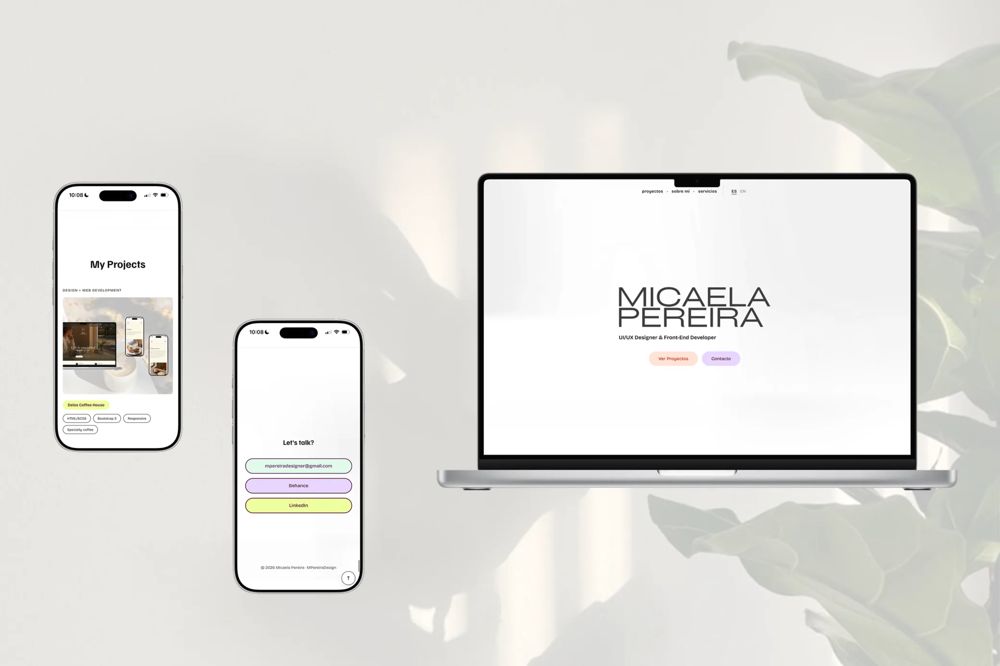

My Projects
Design + Web Development
Delos Coffee House
UI/UX Design + Prototype
Agenda OM
Design + Web Development
MPereiraDesignA riverside café, told through a website.


Delos Coffee House is a specialty coffee shop in Tigre, Buenos Aires. It was my final project for the Web Development course: a five-page, fully responsive site with a modular SCSS architecture (partials, variables and mixins) built on Bootstrap, SEO tailored to each page, and animations made with native transitions and AOS.
The challenge was to capture everything you feel when you visit Delos: its style, the menu, the design of the space, the riverside setting, and the care and dedication of its team. So that anyone browsing the site gets a taste of that experience and leaves with a lovely memory of it.
Booking a moment of wellbeing, made easy.

-

1. Welcome -

2. Explore -

3. Pick a time -

4. Booking confirmed
Agenda OM is an app for booking wellness experiences: massages, reiki, family constellations and holistic group gatherings. It was my final project for the UX/UI Design course.
The challenge was to make a single app work for both one-on-one sessions and group gatherings, and to keep booking simple and frictionless.
Agenda OM mobile app process
This site, from idea to code.

This portfolio is one of my projects too: I designed and built it from start to finish. I started with the content and structure, designed it as an interactive mockup, and then built it with HTML, modular SCSS and Bootstrap, in both Spanish and English.
The challenge was for the site to say as much about me as my projects do: beautiful, clear and frictionless. That's why I cared for every detail, from color contrast and keyboard navigation to image weight, so anyone can browse it comfortably on any screen.
About me
“I like things to look beautiful, with thoughtful, creative design — but above all, I want them to work. To be intuitive, natural, frictionless. For people to enjoy using them and want to keep exploring.”


Interface design, web development, and redesigning what already exists: three ways to support your project, from idea to screen.
Have an idea for a website or an app, or something you already have that doesn't quite feel right? I can design it, build it, or give it a fresh take, always focused on making it easy to use and true to its purpose. Write to me and let's talk it through.
Contact